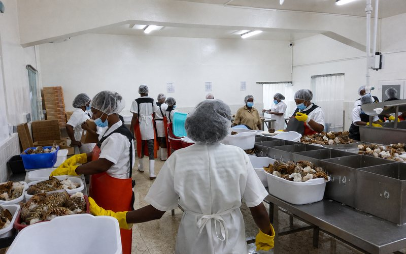
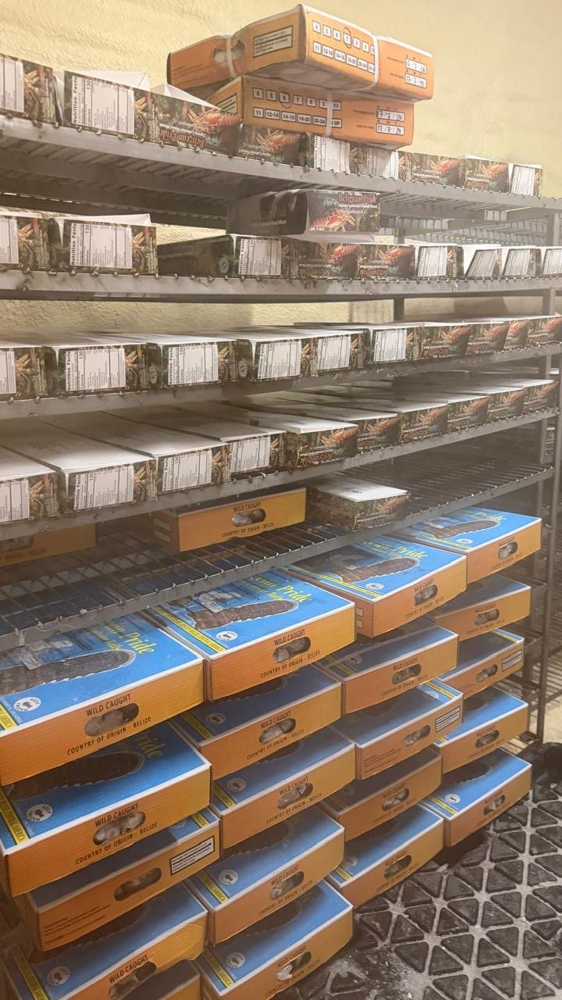

A member-owned society, registered in 1966
NATFISH was built so that Belizean fishers could combine their effort and reach markets no single fisher could reach alone.
National Fishermen Producers Co-operative Society Ltd.
Registered on 29 April 1966
National Fishermen Producers Co-operative Society Ltd was registered in Belize City. What began with 20 members has grown into a member-owned co-operative of 636 fishers.
The co-operative is owned by its members and governed by a seven-member Managing Committee elected from the general membership. Members are not customers of the Society; they are its owners, and the committee is there to support and serve its members.
NATFISH supports its members through education in fishery management, and by purchasing and marketing their produce. Its aim is to secure the best possible value in international markets and to improve the livelihoods of the fishers who own it.

- Members 636 fishers
- Governance Seven-member Managing Committee, elected by the membership
- Base #1 Angel Lane, Belize City, Belize
Members own it, and members govern it
NATFISH is owned by the 636 fishers who make it up. Members elect a seven-member Managing Committee, and that committee serves as the board overseeing the Society.
- 01 Fishers 636 members harvest in Belizean waters
- 02 Co-operative The Society purchases members' produce
- 03 Processing Handling, sorting, packing and cold storage
- 04 Market Buyers at home and internationally

Behind every product is a fishing community
636 fisher members, and the people who receive, prepare and pack what they land. The co-operative is the structure that connects their work at sea to a buyer.
The Co-operative gives a fisher more than a buyer for the day’s catch. It gives a share in the organization, a vote in how it is run, and a route to markets that would otherwise be out of reach.
Through the Society, Belizean Pride Seafood has reached buyers in the United States, Canada, Mexico, the West Indies, Taiwan and Australia.

Milestones
-
1966
Co-operative registered in Belize City
The Society and its by-laws were registered on 29 April 1966.
-
636
Fisher members
Membership has grown from 20 members to 636 fishers.
-
Seven
Elected Managing Committee members
The Managing Committee is selected from the general membership and governs the Society on the members' behalf.
-
Markets
Belizean seafood supplied internationally
NATFISH has supplied Belizean seafood to the United States, Canada, Mexico, the West Indies, Taiwan and Australia.
Membership, governance and market figures come from the FisheryProgress institutional strengthening report and FishWise.
See what the co-operative brings to market
Frozen spiny lobster, queen conch and lionfish fillet, and the co-operative functions that carry a member's catch to a buyer.